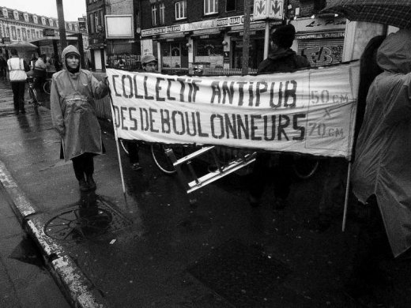
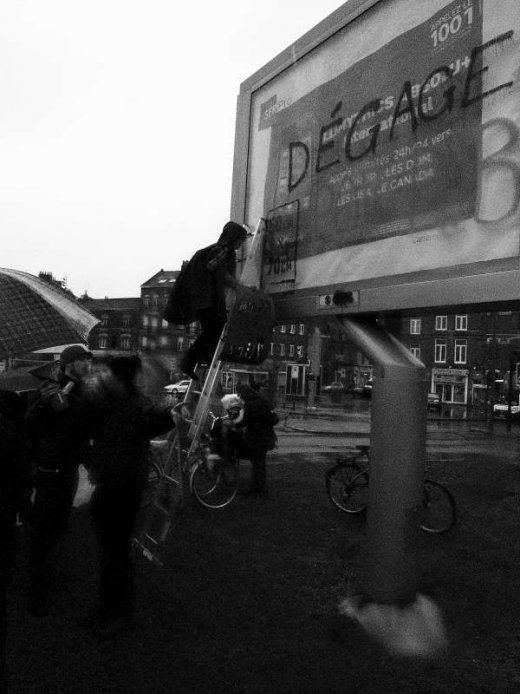
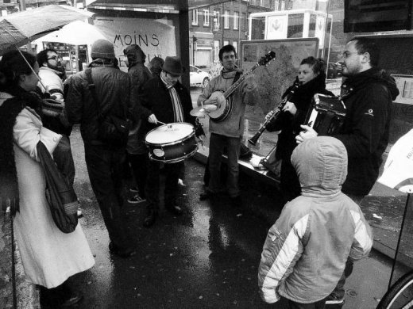
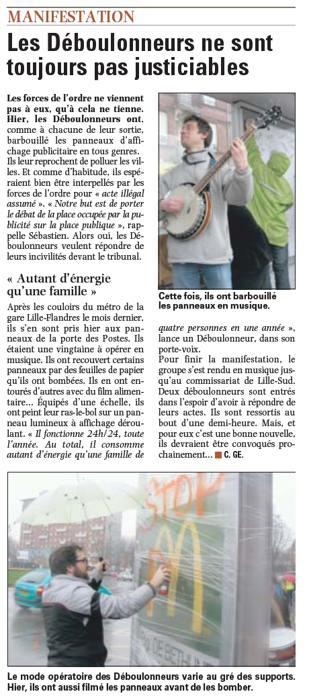

| |
Site dédié à la publication d'informations communiquées par le Collectif des déboulonneurs. En aucun cas ce site n'appelle à des actions illégales. | |
 |
||
|
Accueil du site > Lille > Action du Collectif des Déboulonneurs de Lille – 26 Février 2011

Résumé de l’action :Date : 26 février 2011 Heure de rendez-vous : 11 heures Lieu de rendez-vous : Métro Porte des Postes, côté rue des Postes Description de l’action : Barbouillage d’un panneau de 8 m², recouvrement d’un autre panneau de même taille, enrubannage et barbouillage d’un panneau de 2 m² et nappage (scotchage) de faces publicitaires dans les abribus situés autour du rond-point de la Porte des Postes. Nombre de barbouilleurs : 2 Nombre de participants à l’action : une petite trentaine (dont quatre musiciens) Nombre (approximatif) de passants ayant assisté aux évènements : peu de passants, mais beaucoup d’automobilistes compte tenu de la circulation à cet endroit. Taille des panneaux publicitaires : 2 m² et 8 m² Inscriptions portées sur les nappes ou les panneaux (sur lesquels fut systématiquement apposé www.deboulonneurs.org, le plus souvent accompagnés d’un dessin) :
Présence de la police : 4 policiers et quatre contrôleurs de bus (contrôleurs qui ont retiré les nappes des abribus après notre départ) Nombre de journalistes présents : 3 journalistes (Voix du Nord, Croix du Nord, Agence France Presse) et un cameraman de France 3 Retombées médias :
Toutes les photos : Portfolio 
Compte-rendu détaillé :Pour cette action (la 35ème du Collectif), le rendez-vous était fixé à l’intersection entre le rond-point de la Porte des Postes et la rue du même nom. Il était prévu que les membres du groupe viennent à vélo en faisant fonctionner leurs sonnettes afin d’attirer au maximum l’attention des passants et des automobilistes. Mais le temps exécrable (pluie soutenue) a dissuadé nombre de « déboulonneurs » à utiliser ce moyen de déplacement. A 11 h nous étions déjà une bonne vingtaine de participants dans le groupe, groupe qui s’est réfugié sous un abribus pour se mettre à l’abri de la pluie. Au départ de l’action, commentée par Aless avec le haut-parleur, la banderole portant la mention « Collectif Antipub des Déboulonneurs » a été déployée, soutenue par deux courageux(ses) participant(e)s. Les musiciens utilisèrent alors leurs instruments (dont un tambour avec cymbale et un accordéon). La première action fut de napper l’abribus en question avec une nappe portant la mention « les publicitaires nous voient comme des moutons ». Sous le deuxième abribus deux nappes furent scotchées : « Halte au matraquage publicitaire » et « Marre de la pub ». Sous le troisième abribus la nappe portait les mots « Moins de pub, plus de poésie ». Le panneau déroulant CBS de 2 m² fut ensuite recouvert d’un ruban transparent emprisonnant une nappe portant la mention « La Pub pense pour nous ». L’autre côté du panneau fut ensuite barbouillé avec les mots « Stop Pub ». Puis ce fut le tour de l’un des deux panneaux déroulants CBS de 8 m² barbouillé par Aless et Marion avec les mots « Dégage Pôv’ Pub », agrémentés des pochoirs « 50x70cm » et « Stop Pub www.deboulonneurs.org ». Pendant ce temps les musiciens continuaient à jouer sous le premier abribus nappé, leurs instruments ne supportant pas la pluie. Nous eûmes alors la visite de quatre contrôleurs des transports Lillois, puis de quatre policiers auxquels Aless a expliqué le but de notre action. Lorsque ce fut le tour du second panneau déroulant CBS de 8 m², ce fut le chant « petite histoire de la publicité » sur l’air de Tumbalalaïka qui fut entonné, accompagné des instruments de musique. Il était prévu que ce panneau soit recouvert de la bâche portant la mention « Halte au matraquage publicitaire », mais après deux essais infructueux dûs aux conditions météo, la bâche a dû être repliée. Le groupe s’est ensuite rendu à l’Hôtel de Police situé de l’autre côté du pont enjambant le périphérique et la voie de chemin de fer. Devant l’entrée de cet impressionnant bâtiment il y avait encore un abribus qui fut nappé à l’extérieur avec la nappe portant la mention « La pub enlaidit nos villes ». Puis Aless et Marion se sont rendus à l’Hôtel de Police pour expliquer leur acte devant les policiers. Ils n’ont pas été « gardé au frais » très longtemps, car, alors que nous les attendions au café « Le Central » situé à proximité, ils nous ont rejoint environ une demi-heure après. Ils seront convoqués ultérieurement. L’action proprement dite n’a pas duré plus d’une heure, mais « les prolongations » ont donné l’occasion à douze membres du groupe de se retrouver à Wazemmes pour un moment convivial. 

Article Voix du Nord
|
|
Site utilisant SPIP - Hébergement Ouvaton
|